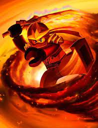

Abilities
- Shoot fire from hands (if the plot allows)
- Walk through fire unscaved (if the plot allows)
- Spinjitzu
- Airjitzu (if the plot allows)
- Summon fire dragon (if the plot allows)
- Expert flirting
Weaknesses
- Swimming
- Roller skates
- Water
- Women
True Potential
Kai found his true potential by realizing he was not meant to be the prophesied green ninja. Ever since hearing the prophesy, Kai became obsessed to prove himself as being worthy of that title. This is what held him back and is why he was the last to discover his true potential. Kai was humbled when he was forced to choose between his pride and the life of the true green ninja, Lloyd.